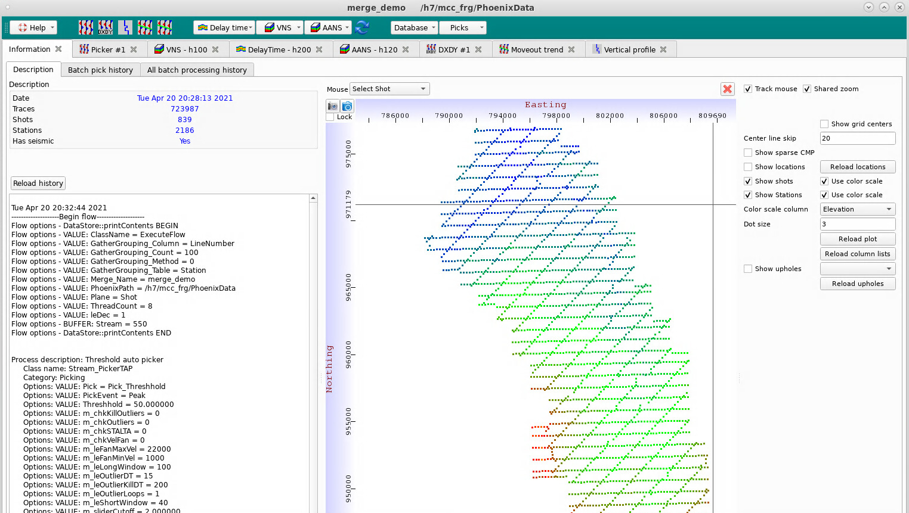

The Merge Manager Window is opened from the Phoenix Main Window.

The teal Navigation Bar at the top of the Merge Manager Window provides access to most of the program features.
Each window that is owned by the Merge will appear as a tab in the Merge Manager Window. These include Picker Windows, Delay Time Models, VNS Models, etc.